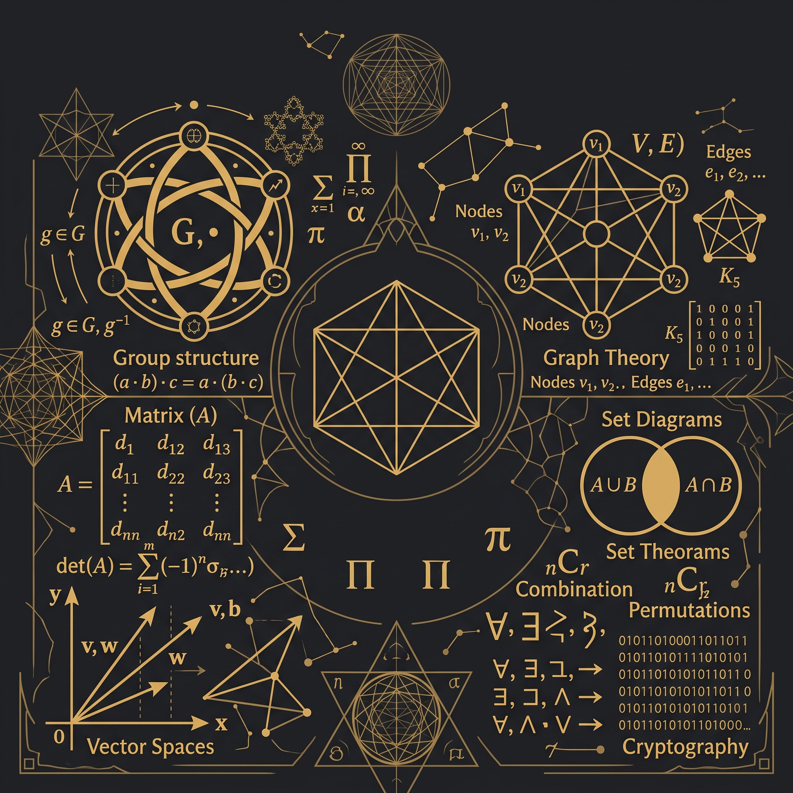
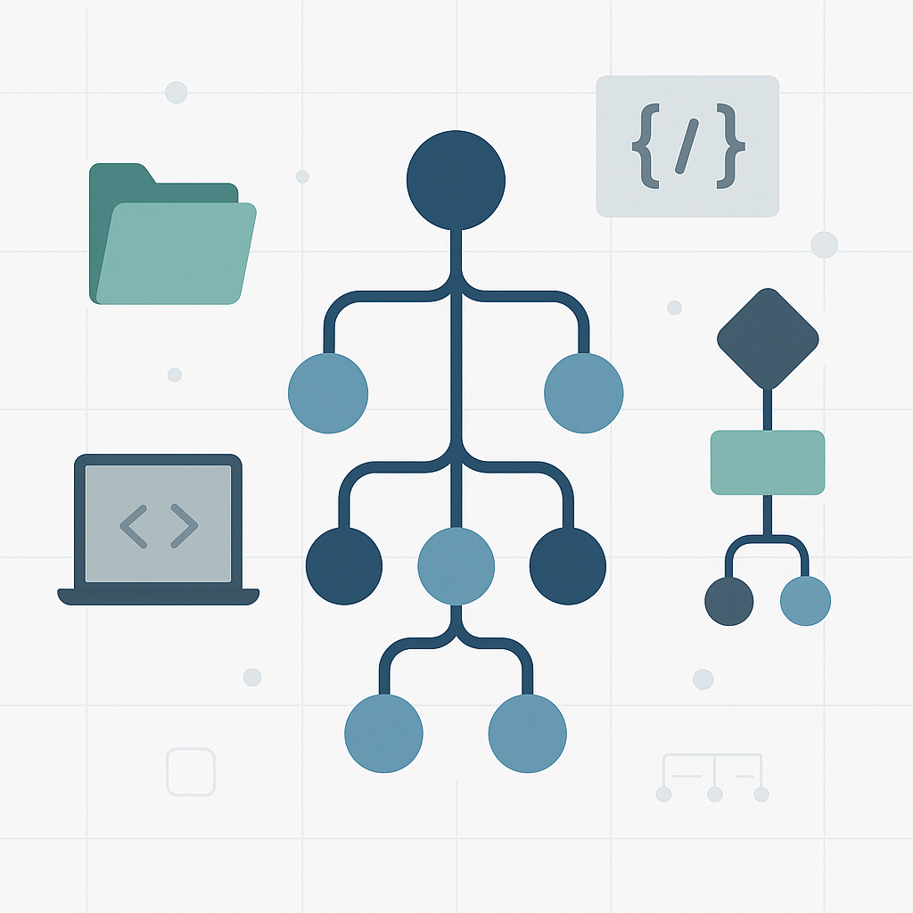

Selamat datang di portofolio saya. Saya adalah mahasiswa Teknik Informatika di Universitas Tarumanagara yang belajar dalam pengembangan Software Development. Saya sangat menyukai tantangan dalam memecahkan masalah logika dan merancang antarmuka web yang interaktif.
SD Xaverius Kotabumi
Ekstrakulikuler:
SMP Xaverius Kotabumi
Ekstrakulikuler:
SMA Negeri 3 Kotabumi
Pengalaman Organisasi:
Universitas Tarumanagara
Pengalaman Organisasi:
Berikut adalah beberapa bahasa pemrograman dan teknologi yang telah saya pelajari dan gunakan dalam mengembangkan berbagai proyek aplikasi maupun web:
Mengembangkan sistem backend mandiri yang terinspirasi dari portal akademik LINTAR. Proyek ini mencakup perancangan struktur database, pengelolaan keamanan, dan pemrosesan data mahasiswa secara terstruktur untuk memastikan sistem bekerja dengan aman dan efisien.

Membangun program untuk memecahkan perhitungan matriks dan operasi vektor. Proyek ini mengimplementasikan konsep matematika diskrit ke dalam kode program untuk menyelesaikan masalah komputasional dasar secara otomatis dan akurat.

Menerapkan algoritma pencarian rute terpendek (Dijkstra's Algorithm) menggunakan struktur data Graf. Proyek ini secara spesifik memetakan koordinat dan mencari rute paling efisien antar titik lokasi objek ATM yang terinspirasi dari map Grand Theft Auto V.